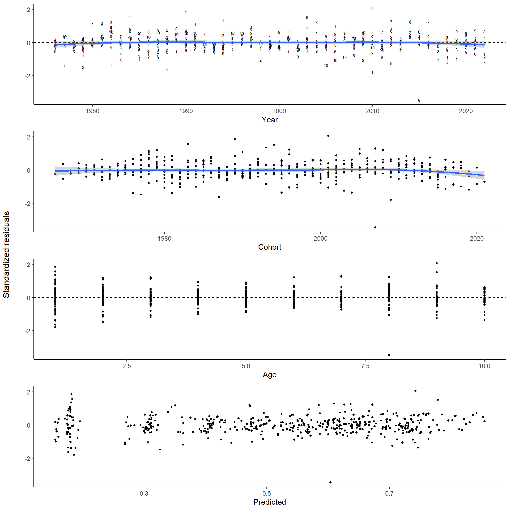

Catch-at-age: assessment plots
2024-09-10
1 SET-UP
## Warning: le package 'knitr' a été compilé avec la version R 4.3.31.1 settings
source('0.0_settings.R')
## Warning: le package 'ggplot2' a été compilé avec la version R 4.3.3
## Warning: le package 'gridExtra' a été compilé avec la version R 4.3.3
## Warning: le package 'viridis' a été compilé avec la version R 4.3.3
## Warning: le package 'viridisLite' a été compilé avec la version R 4.3.3
## Warning: le package 'plyr' a été compilé avec la version R 4.3.3
## Warning: le package 'reshape2' a été compilé avec la version R 4.3.3
## Warning: le package 'lubridate' a été compilé avec la version R 4.3.3
## Warning: le package 'dplyr' a été compilé avec la version R 4.3.3
## Warning: le package 'tidyr' a été compilé avec la version R 4.3.3
## Warning: le package 'RcppEigen' a été compilé avec la version R 4.3.31.2 load all data
load(paste0(dir.rdat, "caa.Rdata"))
load(paste0(dir.rdat, "catch.caa.Rdata"))
load(paste0(dir.rdat, "lf.caa.Rdata"))
load(paste0(dir.rdat, "bio.caa.Rdata"))2 Input data plot
bio.caa$id <- with(bio.caa,paste(sample.id,year,period,region,gear),collapse='.')
bio.in <- ddply(bio.caa,c('year','period','region','gear'),summarise,n=length(id),N=length(unique(id)))
bio.in$input <- 'bio'
lf.caa$id <- with(lf.caa,paste(sample.id,year,period,region,gear),collapse='.')
lf.in <- ddply(lf.caa,c('year','period','region','gear'),summarise,n=length(id),N=length(unique(id)))
lf.in$input <- 'lf'
names(catch.caa)[5] <- 'N'
catch.caa$input <- 'catch'
cols <- c("year","period","region","gear","N","input")
all <- rbind(catch.caa[,cols],lf.in[,cols],bio.in[,cols])
all$input <- factor(all$input,levels=c("catch","lf","bio"))
fnames <- as_labeller(c(`catch` = "Débarquement / Landings (t)", `lf` = "Échantillons de fréquence de longueur (nombre) / Length-frequency samples (number)",`bio` = "Biologique (nombre de poissons) / Biological (number of fish)"))
p1 <- ggplot(all,aes(x=year,y=N,fill=gear))+
geom_bar(stat='identity')+
facet_wrap(input~.,scale='free_y',ncol=1,labeller = fnames)+
scale_y_continuous(expand = c(0,0))+
scale_x_continuous(expand = c(0,0), limits=c(1975,tail(my.year,1)+1))+
scale_fill_viridis_d(na.value = "grey50")+
theme(legend.position = 'top')+
labs(x='Année/Year',y='',fill='Enging / Gear')
ggsave(paste0("img/", tail(my.year,1),"/Samples_gear.png"), width=8, height=6, dpi=600, units="in")
## Warning: Removed 446 rows containing missing values or values outside the scale range (`geom_bar()`).
p2 <- ggplot(all,aes(x=year,y=N,fill=as.factor(period)))+
geom_bar(stat='identity')+
facet_wrap(input~.,scale='free_y',ncol=1,labeller = fnames)+
scale_y_continuous(expand = c(0,0))+
scale_x_continuous(expand = c(0,0), limits=c(1975,tail(my.year,1)+1))+
scale_fill_viridis_d(na.value = "grey50")+
theme(legend.position = 'top')+
labs(x='Année/Year',y='',fill='Période / Period')
ggsave(paste0("img/", tail(my.year,1),"/Samples_period.png"), width=8, height=6, dpi=600, units="in")
## Warning: Removed 446 rows containing missing values or values outside the scale range (`geom_bar()`).
p3 <- ggplot(all,aes(x=year,y=N,fill=region))+
geom_bar(stat='identity')+
facet_wrap(input~.,scale='free_y',ncol=1,labeller = fnames)+
scale_y_continuous(expand = c(0,0))+
scale_x_continuous(expand = c(0,0), limits=c(1975,tail(my.year,1)+1))+
scale_fill_viridis_d(na.value = "grey50")+
theme(legend.position = 'top')+
labs(x='Année/Year',y='',fill='Région / Region')
ggsave(paste0("img/", tail(my.year,1),"/Samples_region.png"), width=8, height=6, dpi=600, units="in")
## Warning: Removed 446 rows containing missing values or values outside the scale range (`geom_bar()`).
grid.arrange(p1,p2,p3,ncol=3)
## Warning: Removed 446 rows containing missing values or values outside the scale range (`geom_bar()`).
## Removed 446 rows containing missing values or values outside the scale range (`geom_bar()`).
## Removed 446 rows containing missing values or values outside the scale range (`geom_bar()`).
sample_export <- rbind(lf.in[,cols],bio.in[,cols])
sample_export$input <- factor(sample_export$input,levels=c("lf","bio"))
fnamesexport <- as_labeller(c(`lf` = "Length-frequency samples (number)",`bio` = "Biological (number)"))
p3ex <- ggplot(sample_export,aes(x=year,y=N,fill=region))+
geom_bar(stat='identity')+
facet_wrap(input~.,scale='free_y',ncol=1,labeller = fnames)+
scale_y_continuous(expand = c(0,0))+
scale_x_continuous(expand = c(0,0), limits=c(1975,tail(my.year,1)+1))+
scale_fill_viridis_d(na.value = "grey50")+
theme(legend.position = 'right')+
labs(x='',y='',fill='Region')
ggsave(paste0("img/", tail(my.year,1),"/Samples_EN.png"), width=8, height=4, dpi=600, units="in")
## Warning: Removed 58 rows containing missing values or values outside the scale range (`geom_bar()`).3 CAA plots
3.1 RAW
caa$zero <- caa$caan==0
ggplot(caa,aes(x=year,y=age))+
geom_point(alpha=0.8,aes(size=caan,col=zero))+
scale_size(range = c(1,12))+
scale_y_continuous(breaks=min(caa$age):max(caa$age))+
scale_color_manual(values=c('black','grey'))+
labs(x='Year',y='Age',size='Numbers',col='Zero')3.2 SPAY
d <- reshape2::dcast(caa,age~year,value.var = 'caan')
if(length(unique(d$year)) >1){
d <- cbind(age=d[,1],spay(d[,-1]))
d <- reshape2::melt(d,id.vars='age',variable.name='year',value.name='caan')
d$year <- as.numeric(as.character(d$year))
ggplot(d,aes(x=year,y=age))+
geom_point(alpha=0.8,aes(size=caan))+
scale_size(range = c(1,12))+
scale_y_continuous(breaks=min(caa$age):max(caa$age))
}3.3 SPAY: prop
d <- ddply(caa,c('year'),transform,caan.prop=caan/sum(caan))
CAA<- ggplot(d,aes(x=year,y=age))+
geom_point(alpha=0.8,aes(size=caan.prop,col=zero))+
scale_size(name="",range = c(1,12))+
scale_y_continuous(breaks=min(caa$age):max(caa$age))+
scale_color_manual(values=c('black','grey'), guide=F)
CAA + labs(x='Year',y='Age',size='Proportion',col='Zero')
## Warning: The `guide` argument in `scale_*()` cannot be `FALSE`. This was deprecated in ggplot2 3.3.4.
## ℹ Please use "none" instead.
## This warning is displayed once every 8 hours.
## Call `lifecycle::last_lifecycle_warnings()` to see where this warning was generated.ggsave("img/CAA_EN.png", width=8, height=4, dpi=600, units="in")
CAA + labs(x='Année',y='Âge',size='Proportion',col='Zero')ggsave("img/CAA_FR.png", width=8, height=4, dpi=600, units="in")
3.4 SPYA
d <- reshape2::dcast(caa,age~year,value.var = 'caan')
d <- cbind(age=d[,1],spya(d[,-1]))
d <- reshape2::melt(d,id.vars='age',variable.name='year',value.name='caan')
d$year <- as.numeric(as.character(d$year))
ggplot(d,aes(x=year,y=age))+
geom_point(alpha=0.8,aes(size=caan))+
scale_size(range = c(1,12))+
scale_y_continuous(breaks=min(caa$age):max(caa$age))3.5 SPYA: prop
d <- ddply(caa,c('age'),transform,caan.prop=caan/sum(caan))
ggplot(d,aes(x=year,y=age))+
geom_point(alpha=0.8,aes(size=caan.prop))+
scale_size(range = c(1,12))+
scale_y_continuous(breaks=min(caa$age):max(caa$age))4 WAA
4.1 linear interpol
caa.old <- expand.grid(year=1968:max(caa$year),age=unique(caa$age))
caa.inter <- merge(caa.old,caa,all=TRUE)
caa.inter <- caa.inter[order(caa.inter$age,caa.inter$year),]
par(mfrow=c(5,2))
caa.inter$waa.interpol <- ddply(caa.inter,c('age'),summarise,waa.interpol=interpol(year,waa,"linear",from = 1968,to=max(caa.inter$year),title = age[1])[,6])[,2]
## Warning: Returning more (or less) than 1 row per `summarise()` group was deprecated in dplyr 1.1.0.
## ℹ Please use `reframe()` instead.
## ℹ When switching from `summarise()` to `reframe()`, remember that `reframe()` always returns an ungrouped data frame and adjust
## accordingly.
## ℹ The deprecated feature was likely used in the plyr package.
## Please report the issue at <https://github.com/hadley/plyr/issues>.
## This warning is displayed once every 8 hours.
## Call `lifecycle::last_lifecycle_warnings()` to see where this warning was generated.
caa.inter <- caa.inter[order(caa.inter$year,caa.inter$age,decreasing = F),]
write.csv(caa.inter,paste0('csv/',tail(my.year,1),'/caa_interpol.csv'),row.names = FALSE)4.2 Plot
p <- ggplot(caa.inter,aes(x=year,y=waa.interpol,col=as.factor(age)))+
geom_line()+
scale_color_viridis_d()+
scale_x_continuous(expand=c(0,0))+
labs(y='Catch weight (kg)',x='Year')+
theme(legend.position = 'none')
p
p <- p+labs(y='Poids dans le captures (kg)',x='Année')
ggsave(paste0('waac_',Sys.Date(),'_FR.png'),p,'png','img/output',width = 15,height = 8,units = 'cm')Try model smoothing. Not used because if changes to WAA, waa*caa does not equal total catch anymore. # Model predictions
caa$waa.cv <- 0.01 # need to calculate this!! this is absurdly small value so all predictions will match observed
caa[caa$caaw==0,'caaw'] <- NA # should be correct in get.caa function
waa.fit <- with(caa, armatrix.fit(year=caa$year,age=caa$age,x=caa$waa,cv=caa$waa.cv))
## Optimizing tape... Done
## Matching hessian patterns... Done
## outer mgc: 287.5605
## outer mgc: 287.5605
## 0: -287.51667: -1.77234 -1.20259 -0.911532 -0.739370 -0.606227 -0.513334 -0.433463 -0.389432 -0.307268 -0.272264 -2.30259 -2.30259 -2.30259 0.00000 0.00000 0.00000 0.00000
## outer mgc: 73.79331
## outer mgc: 44.15007
## outer mgc: 29.15815
## outer mgc: 49.24401
## outer mgc: 29.62438
## outer mgc: 42.08149
## outer mgc: 28.77104
## outer mgc: 50.52225
## outer mgc: 34.78866
## outer mgc: 49.44605
## 10: -350.90609: -1.76676 -1.22235 -0.911736 -0.736595 -0.620287 -0.517213 -0.446750 -0.384249 -0.338711 -0.283599 -2.49659 -2.58868 -2.10306 0.0327155 0.0596318 -0.0915811 -0.437212
## outer mgc: 32.5195
## outer mgc: 56.54631
## outer mgc: 40.97399
## outer mgc: 70.92451
## outer mgc: 23.05426
## outer mgc: 27.73256
## outer mgc: 22.63187
## outer mgc: 30.69494
## outer mgc: 23.26229
## outer mgc: 28.45847
## 20: -362.80680: -1.77230 -1.21402 -0.918464 -0.743155 -0.620038 -0.516037 -0.441291 -0.408970 -0.319400 -0.293731 -2.62318 -2.73051 -2.15495 0.0550550 0.0918662 -0.138151 -0.710159
## outer mgc: 20.73741
## outer mgc: 26.22739
## outer mgc: 24.04488
## outer mgc: 27.04053
## outer mgc: 18.83041
## outer mgc: 41.44538
## outer mgc: 22.33482
## outer mgc: 26.5232
## outer mgc: 17.21385
## outer mgc: 25.7487
## 30: -369.22858: -1.78455 -1.20354 -0.915922 -0.745308 -0.620639 -0.525888 -0.437625 -0.398489 -0.329771 -0.292308 -2.71790 -2.80776 -2.19355 0.0750079 0.112592 -0.189160 -0.935906
## outer mgc: 25.19259
## outer mgc: 28.66403
## outer mgc: 15.73644
## outer mgc: 28.05886
## outer mgc: 14.62608
## outer mgc: 14.51684
## outer mgc: 15.58716
## outer mgc: 14.30342
## outer mgc: 14.75818
## outer mgc: 14.03813
## 40: -372.84106: -1.77796 -1.20827 -0.920521 -0.745796 -0.616225 -0.522263 -0.443063 -0.404262 -0.327465 -0.290453 -2.77810 -2.84447 -2.21424 0.0915415 0.126140 -0.233206 -1.09186
## outer mgc: 13.91081
## outer mgc: 13.76209
## outer mgc: 13.61043
## outer mgc: 13.48712
## outer mgc: 13.95145
## outer mgc: 13.20729
## outer mgc: 13.1663
## outer mgc: 12.91684
## outer mgc: 12.70602
## outer mgc: 12.616
## 50: -374.36560: -1.77726 -1.21053 -0.918392 -0.747974 -0.615009 -0.522244 -0.444048 -0.403627 -0.328285 -0.290687 -2.81041 -2.86785 -2.22427 0.101127 0.134609 -0.255814 -1.17542
## outer mgc: 12.41948
## outer mgc: 12.31862
## outer mgc: 12.58558
## outer mgc: 12.01922
## outer mgc: 11.85688
## outer mgc: 11.72393
## outer mgc: 11.57847
## outer mgc: 11.42716
## outer mgc: 11.30591
## outer mgc: 11.13669
## 60: -375.77570: -1.77772 -1.20917 -0.920184 -0.746466 -0.616661 -0.521432 -0.445030 -0.403516 -0.328439 -0.290659 -2.84275 -2.88734 -2.23430 0.112662 0.143791 -0.281809 -1.26541
## outer mgc: 11.02232
## outer mgc: 10.85553
## outer mgc: 10.73631
## outer mgc: 10.56702
## outer mgc: 10.46143
## outer mgc: 10.29291
## outer mgc: 10.17451
## outer mgc: 10.03945
## outer mgc: 13.85722
## outer mgc: 9.764061
## 70: -377.01876: -1.77853 -1.20969 -0.920608 -0.746714 -0.615334 -0.521947 -0.443238 -0.404611 -0.328383 -0.291758 -2.87192 -2.90048 -2.24400 0.126806 0.154184 -0.311031 -1.35838
## outer mgc: 10.37476
## outer mgc: 9.514142
## outer mgc: 9.372748
## outer mgc: 9.254027
## outer mgc: 9.127543
## outer mgc: 9.005879
## outer mgc: 9.119624
## outer mgc: 8.762385
## outer mgc: 8.639606
## outer mgc: 8.52496
## 80: -378.08616: -1.77675 -1.21029 -0.918399 -0.747408 -0.616146 -0.522088 -0.445044 -0.405099 -0.329073 -0.291929 -2.89510 -2.90668 -2.25375 0.144886 0.167139 -0.343356 -1.45242
## outer mgc: 8.403179
## outer mgc: 9.056113
## outer mgc: 8.186478
## outer mgc: 14.63736
## outer mgc: 7.953958
## outer mgc: 10.43823
## outer mgc: 7.762874
## outer mgc: 7.62155
## outer mgc: 7.533661
## outer mgc: 7.521745
## 90: -378.99291: -1.77748 -1.20949 -0.919478 -0.747632 -0.617076 -0.523011 -0.446437 -0.404446 -0.328751 -0.290584 -2.91082 -2.90888 -2.26265 0.168207 0.184545 -0.377860 -1.54466
## outer mgc: 24.74332
## outer mgc: 16.10601
## outer mgc: 19.46526
## outer mgc: 6.25871
## outer mgc: 6.675923
## outer mgc: 6.091807
## outer mgc: 6.010102
## outer mgc: 5.957416
## outer mgc: 6.23521
## outer mgc: 20.70682
## 100: -380.40494: -1.77448 -1.21107 -0.919735 -0.750961 -0.619631 -0.523869 -0.450089 -0.405145 -0.328865 -0.288660 -2.90937 -2.88882 -2.28085 0.253051 0.248077 -0.463801 -1.73112
## outer mgc: 10.12044
## outer mgc: 24.3358
## outer mgc: 12.99259
## outer mgc: 8.931308
## outer mgc: 7.303205
## outer mgc: 7.063723
## outer mgc: 5.113804
## outer mgc: 12.6292
## outer mgc: 6.569215
## outer mgc: 8.832088
## 110: -381.50868: -1.77751 -1.21165 -0.919985 -0.750732 -0.616548 -0.525630 -0.446197 -0.407351 -0.331448 -0.293935 -2.86612 -2.85367 -2.29500 0.425661 0.371558 -0.554041 -1.86071
## outer mgc: 6.982384
## outer mgc: 12.4593
## outer mgc: 4.48519
## outer mgc: 14.72696
## outer mgc: 4.335972
## outer mgc: 9.984315
## outer mgc: 45.49521
## outer mgc: 43.12267
## outer mgc: 28.07818
## outer mgc: 22.71575
## 120: -384.21683: -1.77731 -1.20516 -0.920698 -0.748663 -0.615193 -0.523403 -0.448212 -0.403031 -0.330215 -0.291913 -2.66906 -2.78171 -2.32557 1.43058 0.926306 -0.694705 -2.52962
## outer mgc: 5.330076
## outer mgc: 4.003614
## outer mgc: 3.427536
## outer mgc: 4.246934
## outer mgc: 2.041741
## outer mgc: 4.699033
## outer mgc: 6.61515
## outer mgc: 8.571425
## outer mgc: 18.54195
## outer mgc: 6.456683
## 130: -384.70697: -1.78179 -1.21316 -0.923473 -0.752023 -0.622000 -0.528755 -0.449493 -0.410058 -0.332928 -0.296308 -2.64097 -2.75761 -2.32086 1.66401 0.919289 -0.710276 -2.72447
## outer mgc: 6.809809
## outer mgc: 1.132822
## outer mgc: 2.88368
## outer mgc: 1.381246
## outer mgc: 1.797558
## outer mgc: 1.217863
## outer mgc: 1.733977
## outer mgc: 1.151795
## outer mgc: 1.678512
## outer mgc: 1.123251
## 140: -384.73643: -1.78250 -1.21455 -0.925034 -0.754120 -0.622307 -0.529895 -0.451356 -0.411483 -0.334745 -0.297814 -2.64274 -2.75749 -2.32286 1.66968 0.918371 -0.712214 -2.73300
## outer mgc: 1.648244
## outer mgc: 1.119027
## outer mgc: 1.630059
## outer mgc: 1.11461
## outer mgc: 1.619799
## outer mgc: 1.110066
## outer mgc: 1.615214
## outer mgc: 1.105436
## outer mgc: 1.615223
## outer mgc: 1.10075
## 150: -384.75671: -1.78369 -1.21576 -0.926221 -0.755348 -0.623495 -0.531117 -0.452549 -0.412693 -0.335939 -0.299007 -2.64334 -2.75734 -2.32323 1.67700 0.917307 -0.714294 -2.74446
## outer mgc: 1.619304
## outer mgc: 1.096026
## outer mgc: 1.62727
## outer mgc: 1.091277
## outer mgc: 1.639152
## outer mgc: 1.086514
## outer mgc: 1.655152
## outer mgc: 1.081744
## outer mgc: 1.675628
## outer mgc: 1.076975
## 160: -384.77549: -1.78481 -1.21691 -0.927339 -0.756498 -0.624610 -0.532267 -0.453667 -0.413827 -0.337060 -0.300127 -2.64368 -2.75715 -2.32345 1.68376 0.916255 -0.716170 -2.75633
## outer mgc: 1.701087
## outer mgc: 1.072214
## outer mgc: 1.732206
## outer mgc: 1.06747
## outer mgc: 1.76984
## outer mgc: 1.062752
## outer mgc: 1.815044
## outer mgc: 1.058076
## outer mgc: 1.869056
## outer mgc: 1.053465
## 170: -384.79326: -1.78593 -1.21806 -0.928457 -0.757644 -0.625725 -0.533413 -0.454785 -0.414959 -0.338182 -0.301246 -2.64442 -2.75693 -2.32367 1.68962 0.915188 -0.718077 -2.76824
## outer mgc: 1.933192
## outer mgc: 1.048958
## outer mgc: 2.003837
## outer mgc: 1.044625
## outer mgc: 1.893432
## outer mgc: 1.040229
## outer mgc: 1.93655
## outer mgc: 1.035826
## outer mgc: 1.847388
## outer mgc: 1.031383
## 180: -384.80983: -1.78704 -1.21919 -0.929575 -0.758780 -0.626847 -0.534549 -0.455910 -0.416089 -0.339303 -0.302358 -2.64626 -2.75664 -2.32389 1.69388 0.914041 -0.720236 -2.77962
## outer mgc: 1.86668
## outer mgc: 1.026927
## outer mgc: 1.797484
## outer mgc: 1.022452
## outer mgc: 1.799332
## outer mgc: 1.017953
## outer mgc: 1.748397
## outer mgc: 1.013461
## outer mgc: 1.741724
## outer mgc: 1.008926
## 190: -384.82508: -1.78788 -1.22004 -0.930412 -0.759623 -0.627684 -0.535399 -0.456755 -0.416934 -0.340143 -0.303198 -2.64784 -2.75644 -2.32410 1.69784 0.912910 -0.722354 -2.79141
## outer mgc: 1.701055
## outer mgc: 1.004437
## outer mgc: 1.717391
## outer mgc: 0.9998659
## outer mgc: 1.693781
## outer mgc: 0.9954042
## outer mgc: 1.837906
## outer mgc: 0.9908059
## outer mgc: 1.784589
## outer mgc: 0.9861728
## 200: -384.83928: -1.78840 -1.22058 -0.931012 -0.760242 -0.628302 -0.535973 -0.457336 -0.417520 -0.340724 -0.303741 -2.64876 -2.75635 -2.32432 1.70178 0.911839 -0.724299 -2.80362
## outer mgc: 1.423297
## outer mgc: 0.9812606
## outer mgc: 1.187422
## outer mgc: 0.9764802
## outer mgc: 1.15495
## outer mgc: 0.9716194
## outer mgc: 1.084023
## outer mgc: 0.9668078
## outer mgc: 1.187961
## outer mgc: 0.9619923
## 210: -384.85239: -1.78878 -1.22092 -0.931302 -0.760522 -0.628583 -0.536295 -0.457653 -0.417828 -0.341025 -0.304070 -2.64705 -2.75641 -2.32451 1.70730 0.911051 -0.725467 -2.81689
## outer mgc: 1.193576
## outer mgc: 0.9572142
## outer mgc: 1.310959
## outer mgc: 0.9524645
## outer mgc: 1.338881
## outer mgc: 0.9477839
## outer mgc: 1.518495
## outer mgc: 0.9431989
## outer mgc: 1.562646
## outer mgc: 0.9387905
## 220: -384.86590: -1.78904 -1.22122 -0.931596 -0.760835 -0.628864 -0.536580 -0.457923 -0.418115 -0.341309 -0.304346 -2.64713 -2.75648 -2.32472 1.71171 0.910051 -0.727257 -2.82993
## outer mgc: 1.681606
## outer mgc: 0.9343534
## outer mgc: 1.73919
## outer mgc: 0.9298216
## outer mgc: 1.505231
## outer mgc: 0.9251246
## outer mgc: 1.199971
## outer mgc: 0.9204479
## outer mgc: 1.029054
## outer mgc: 11.26338
## 230: -384.93927: -1.79108 -1.22064 -0.932017 -0.763774 -0.630813 -0.539027 -0.460044 -0.420799 -0.343043 -0.305888 -2.59191 -2.75837 -2.32684 1.78641 0.904142 -0.729978 -2.99338
## outer mgc: 13.61224
## outer mgc: 15.82844
## outer mgc: 13.59799
## outer mgc: 4.138223
## outer mgc: 1.191405
## outer mgc: 4.653023
## outer mgc: 2.718549
## outer mgc: 2.924996
## outer mgc: 2.56392
## outer mgc: 1.871713
## 240: -385.22251: -1.79357 -1.22590 -0.936227 -0.765222 -0.633304 -0.541102 -0.462682 -0.423290 -0.346253 -0.308486 -2.64584 -2.75739 -2.33331 1.76666 0.865960 -0.795532 -3.49998
## outer mgc: 2.132599
## outer mgc: 3.567891
## outer mgc: 1.863085
## outer mgc: 2.470779
## outer mgc: 2.069902
## outer mgc: 1.572685
## outer mgc: 1.228236
## outer mgc: 0.6510391
## outer mgc: 0.3667573
## outer mgc: 0.1281441
## 250: -385.36568: -1.78810 -1.22026 -0.930559 -0.760207 -0.627996 -0.536136 -0.457412 -0.417936 -0.340827 -0.303652 -2.66552 -2.76433 -2.34083 1.59857 0.874554 -0.859286 -5.17990
## outer mgc: 0.186116
## outer mgc: 0.6666379
## outer mgc: 0.6183959
## outer mgc: 0.1991829
## outer mgc: 0.04789288
## outer mgc: 0.005540458
## outer mgc: 0.005105994
## outer mgc: 0.003079087
## outer mgc: 0.0005951896
## outer mgc: 0.0005951896
## outer mgc: 4.666801
## outer mgc: 4.66601
## outer mgc: 5.60006
## outer mgc: 5.600871
## outer mgc: 5.635363
## outer mgc: 5.634329
## outer mgc: 5.6557
## outer mgc: 5.655901
## outer mgc: 5.664638
## outer mgc: 5.664254
## outer mgc: 5.660308
## outer mgc: 5.661179
## outer mgc: 5.625108
## outer mgc: 5.623917
## outer mgc: 5.40468
## outer mgc: 5.405026
## outer mgc: 4.761895
## outer mgc: 4.762677
## outer mgc: 3.439216
## outer mgc: 3.439542
## outer mgc: 0.02111966
## outer mgc: 0.02104793
## outer mgc: 0.04361228
## outer mgc: 0.04356338
## outer mgc: 0.7325514
## outer mgc: 0.734112
## outer mgc: 0.007780748
## outer mgc: 0.007450721
## outer mgc: 0.01086341
## outer mgc: 0.01088267
## outer mgc: 0.0571504
## outer mgc: 0.0567463
## outer mgc: 0.0006066982
## outer mgc: 0.0005836923
## outer mgc: 1
waa.fit
## armatrix model: log likelihood is 385.3678 Convergence OK
caa$waa.cv <- with(caa,waa.sd/waa) # need to calculate this!! this is absurdly small value so all predictions will match observed
waa.fit <- armatrix.fit(year=caa$year,age=caa$age,x=caa$waa,cv=caa$waa.cv)
## Warning in armatrix.fit(year = caa$year, age = caa$age, x = caa$waa, cv = caa$waa.cv): cvs equal to 0/NA replaced by value of historic 95%
## quantile
## Optimizing tape... Done
## Matching hessian patterns... Done
## outer mgc: 78.62803
## outer mgc: 78.62803
## 0: -283.80314: -1.77234 -1.20259 -0.911532 -0.739370 -0.606227 -0.513334 -0.433463 -0.389432 -0.307268 -0.272264 -2.30259 -2.30259 -2.30259 0.00000 0.00000 0.00000 0.00000
## outer mgc: 241.9079
## outer mgc: 192.7533
## outer mgc: 166.3143
## outer mgc: 60.73413
## outer mgc: 77.27062
## outer mgc: 41.45588
## outer mgc: 32.27273
## outer mgc: 62.39521
## outer mgc: 46.38523
## outer mgc: 59.85565
## 10: -345.56432: -1.73334 -1.19303 -0.941032 -0.771373 -0.601822 -0.502450 -0.437013 -0.409550 -0.318213 -0.299388 -2.83163 -2.91057 -3.70121 0.105810 0.125045 0.171699 0.102526
## outer mgc: 23.04651
## outer mgc: 13.62674
## outer mgc: 12.40223
## outer mgc: 13.28692
## outer mgc: 7.647545
## outer mgc: 8.365481
## outer mgc: 11.22377
## outer mgc: 18.06081
## outer mgc: 6.785406
## outer mgc: 13.86812
## 20: -349.85157: -1.74283 -1.19231 -0.913442 -0.746175 -0.608364 -0.523764 -0.437326 -0.412894 -0.316071 -0.307355 -2.93200 -3.00157 -3.83925 0.140639 0.158838 0.189658 0.111738
## outer mgc: 12.88751
## outer mgc: 20.93498
## outer mgc: 8.680767
## outer mgc: 14.98688
## outer mgc: 4.885684
## outer mgc: 14.05751
## outer mgc: 8.339793
## outer mgc: 13.55011
## outer mgc: 8.30234
## outer mgc: 15.37553
## 30: -351.38242: -1.73747 -1.19692 -0.911713 -0.745972 -0.610643 -0.525806 -0.441888 -0.408802 -0.318638 -0.300305 -3.02495 -3.07674 -3.99138 0.196316 0.211191 0.210772 0.122483
## outer mgc: 7.546357
## outer mgc: 15.95638
## outer mgc: 5.258653
## outer mgc: 10.62504
## outer mgc: 3.224476
## outer mgc: 7.131249
## outer mgc: 3.901667
## outer mgc: 4.338927
## outer mgc: 2.676987
## outer mgc: 5.382534
## 40: -352.13513: -1.74147 -1.19268 -0.912604 -0.744920 -0.613166 -0.519771 -0.442332 -0.415006 -0.315522 -0.300755 -3.07085 -3.10864 -4.08313 0.247495 0.258477 0.224542 0.129279
## outer mgc: 5.829463
## outer mgc: 6.026487
## outer mgc: 3.887122
## outer mgc: 5.880542
## outer mgc: 3.727592
## outer mgc: 4.232332
## outer mgc: 3.265613
## outer mgc: 5.463282
## outer mgc: 3.32552
## outer mgc: 5.043166
## 50: -352.60801: -1.74148 -1.19277 -0.913936 -0.744624 -0.611780 -0.521408 -0.443015 -0.412477 -0.317251 -0.302449 -3.09184 -3.11949 -4.16343 0.308733 0.313913 0.237330 0.135452
## outer mgc: 8.389959
## outer mgc: 8.491692
## outer mgc: 27.54146
## outer mgc: 18.16526
## outer mgc: 14.88223
## outer mgc: 5.812083
## outer mgc: 9.287782
## outer mgc: 14.81022
## outer mgc: 15.19226
## outer mgc: 19.34333
## 60: -354.15044: -1.74104 -1.19312 -0.919378 -0.745433 -0.610969 -0.519762 -0.438930 -0.414131 -0.321895 -0.300959 -3.05759 -3.08128 -4.42582 0.740874 0.663093 0.283948 0.156361
## outer mgc: 5.745838
## outer mgc: 1.666204
## outer mgc: 4.243179
## outer mgc: 1.594091
## outer mgc: 3.666467
## outer mgc: 1.586745
## outer mgc: 3.263367
## outer mgc: 1.578765
## outer mgc: 3.028372
## outer mgc: 1.570482
## 70: -354.36971: -1.74292 -1.19483 -0.915473 -0.745710 -0.614287 -0.522898 -0.444227 -0.415607 -0.318253 -0.305351 -3.06237 -3.08499 -4.43934 0.766909 0.681790 0.286349 0.157270
## outer mgc: 2.876991
## outer mgc: 1.562022
## outer mgc: 2.778676
## outer mgc: 1.553478
## outer mgc: 2.711947
## outer mgc: 1.544912
## outer mgc: 2.664337
## outer mgc: 1.536368
## outer mgc: 2.628479
## outer mgc: 1.527872
## 80: -354.43868: -1.74330 -1.19518 -0.915822 -0.746081 -0.614642 -0.523237 -0.444552 -0.415973 -0.318506 -0.305726 -3.06679 -3.08818 -4.45167 0.787091 0.696262 0.288479 0.158074
## outer mgc: 2.600054
## outer mgc: 1.519445
## outer mgc: 2.576529
## outer mgc: 1.511096
## outer mgc: 2.556416
## outer mgc: 1.502833
## outer mgc: 2.538839
## outer mgc: 1.494659
## outer mgc: 2.523278
## outer mgc: 1.486575
## 90: -354.50428: -1.74342 -1.19532 -0.915968 -0.746234 -0.614789 -0.523378 -0.444676 -0.416155 -0.318588 -0.305904 -3.06967 -3.09009 -4.46485 0.807753 0.710912 0.290750 0.158936
## outer mgc: 2.509419
## outer mgc: 1.478579
## outer mgc: 2.497072
## outer mgc: 1.47067
## outer mgc: 2.486116
## outer mgc: 1.462845
## outer mgc: 2.47647
## outer mgc: 1.455101
## outer mgc: 2.46808
## outer mgc: 1.447435
## 100: -354.56708: -1.74351 -1.19542 -0.916088 -0.746360 -0.614911 -0.523495 -0.444781 -0.416310 -0.318654 -0.306059 -3.07136 -3.09108 -4.47862 0.828664 0.725558 0.293120 0.159836
## outer mgc: 2.460905
## outer mgc: 1.439843
## outer mgc: 2.454915
## outer mgc: 1.432321
## outer mgc: 2.450083
## outer mgc: 1.424867
## outer mgc: 2.446392
## outer mgc: 1.417475
## outer mgc: 2.443827
## outer mgc: 1.410143
## 110: -354.62747: -1.74361 -1.19554 -0.916212 -0.746489 -0.615037 -0.523615 -0.444892 -0.416465 -0.318727 -0.306217 -3.07210 -3.09139 -4.49282 0.849735 0.740122 0.295558 0.160761
## outer mgc: 2.442376
## outer mgc: 1.402866
## outer mgc: 2.442035
## outer mgc: 1.395643
## outer mgc: 2.442801
## outer mgc: 1.388469
## outer mgc: 2.444676
## outer mgc: 1.38134
## outer mgc: 2.447669
## outer mgc: 1.374255
## 120: -354.68572: -1.74371 -1.19566 -0.916342 -0.746624 -0.615169 -0.523742 -0.445011 -0.416625 -0.318811 -0.306382 -3.07211 -3.09121 -4.50732 0.870921 0.754561 0.298046 0.161699
## outer mgc: 2.451791
## outer mgc: 1.367209
## outer mgc: 2.457059
## outer mgc: 1.360199
## outer mgc: 2.463496
## outer mgc: 1.353223
## outer mgc: 2.471129
## outer mgc: 1.346278
## outer mgc: 2.479992
## outer mgc: 1.33936
## 130: -354.74202: -1.74383 -1.19579 -0.916478 -0.746766 -0.615308 -0.523876 -0.445138 -0.416790 -0.318902 -0.306551 -3.07155 -3.09070 -4.52203 0.892199 0.768846 0.300569 0.162646
## outer mgc: 2.490124
## outer mgc: 1.332466
## outer mgc: 2.501571
## outer mgc: 1.325594
## outer mgc: 2.514385
## outer mgc: 1.318741
## outer mgc: 2.528626
## outer mgc: 1.311904
## outer mgc: 2.544361
## outer mgc: 1.305079
## 140: -354.79647: -1.74395 -1.19593 -0.916621 -0.746913 -0.615454 -0.524016 -0.445272 -0.416961 -0.319001 -0.306726 -3.07059 -3.08996 -4.53688 0.913544 0.782956 0.303117 0.163594
## outer mgc: 2.561665
## outer mgc: 1.298265
## outer mgc: 2.580621
## outer mgc: 1.291457
## outer mgc: 2.601321
## outer mgc: 1.284654
## outer mgc: 2.623868
## outer mgc: 1.277851
## outer mgc: 2.648374
## outer mgc: 1.271045
## 150: -354.84917: -1.74409 -1.19607 -0.916770 -0.747068 -0.615606 -0.524163 -0.445412 -0.417138 -0.319105 -0.306906 -3.06937 -3.08911 -4.55182 0.934921 0.796874 0.305680 0.164539
## outer mgc: 2.674962
## outer mgc: 1.264234
## outer mgc: 2.703767
## outer mgc: 1.257413
## outer mgc: 2.734936
## outer mgc: 1.25058
## outer mgc: 2.768626
## outer mgc: 1.24373
## outer mgc: 2.805008
## outer mgc: 1.236859
## 160: -354.90013: -1.74423 -1.19623 -0.916928 -0.747231 -0.615766 -0.524319 -0.445561 -0.417323 -0.319214 -0.307093 -3.06807 -3.08827 -4.56681 0.956273 0.810582 0.308252 0.165478
## outer mgc: 2.844265
## outer mgc: 1.229963
## outer mgc: 2.886591
## outer mgc: 1.223037
## outer mgc: 2.932191
## outer mgc: 1.216076
## outer mgc: 2.981275
## outer mgc: 1.209075
## outer mgc: 3.03406
## outer mgc: 1.202028
## 170: -354.94928: -1.74438 -1.19639 -0.917095 -0.747404 -0.615937 -0.524487 -0.445721 -0.417518 -0.319329 -0.307287 -3.06693 -3.08759 -4.58176 0.977496 0.824063 0.310821 0.166405
## outer mgc: 3.090762
## outer mgc: 1.194928
## outer mgc: 3.151591
## outer mgc: 1.187769
## outer mgc: 3.216741
## outer mgc: 1.180543
## outer mgc: 3.28638
## outer mgc: 1.173242
## outer mgc: 3.222133
## outer mgc: 1.165915
## 180: -354.99645: -1.74454 -1.19657 -0.917273 -0.747588 -0.616116 -0.524663 -0.445889 -0.417718 -0.319454 -0.307487 -3.06624 -3.08722 -4.59658 0.998446 0.837299 0.313371 0.167312
## outer mgc: 3.267749
## outer mgc: 1.158665
## outer mgc: 3.221881
## outer mgc: 1.151427
## outer mgc: 3.251775
## outer mgc: 1.144264
## outer mgc: 3.217145
## outer mgc: 1.137127
## outer mgc: 3.235505
## outer mgc: 1.130057
## 190: -355.04194: -1.74468 -1.19672 -0.917426 -0.747744 -0.616270 -0.524812 -0.446031 -0.417884 -0.319566 -0.307660 -3.06524 -3.08663 -4.61153 1.01937 0.850388 0.315946 0.168222
## outer mgc: 3.208437
## outer mgc: 1.123019
## outer mgc: 3.218745
## outer mgc: 1.11604
## outer mgc: 3.196935
## outer mgc: 1.109096
## outer mgc: 3.201666
## outer mgc: 1.102203
## outer mgc: 3.183528
## outer mgc: 1.095345
## 200: -355.08595: -1.74482 -1.19687 -0.917577 -0.747899 -0.616421 -0.524957 -0.446172 -0.418044 -0.319681 -0.307831 -3.06366 -3.08566 -4.62670 1.04039 0.863348 0.318561 0.169142
## outer mgc: 3.184359
## outer mgc: 1.088531
## outer mgc: 3.168748
## outer mgc: 1.081752
## outer mgc: 3.166783
## outer mgc: 1.075012
## outer mgc: 3.152832
## outer mgc: 1.068304
## outer mgc: 3.148757
## outer mgc: 1.061631
## 210: -355.12857: -1.74496 -1.19702 -0.917731 -0.748057 -0.616576 -0.525105 -0.446317 -0.418206 -0.319800 -0.308005 -3.06160 -3.08441 -4.64205 1.06147 0.876162 0.321207 0.170067
## outer mgc: 3.135748
## outer mgc: 1.054988
## outer mgc: 3.129896
## outer mgc: 1.048376
## outer mgc: 3.117108
## outer mgc: 1.04179
## outer mgc: 3.109408
## outer mgc: 1.035231
## outer mgc: 3.095851
## outer mgc: 1.028696
## 220: -355.16985: -1.74510 -1.19717 -0.917888 -0.748217 -0.616733 -0.525255 -0.446462 -0.418371 -0.319924 -0.308179 -3.05913 -3.08294 -4.65755 1.08263 0.888826 0.323882 0.170996
## outer mgc: 3.085514
## outer mgc: 1.022183
## outer mgc: 3.069249
## outer mgc: 1.015691
## outer mgc: 3.053623
## outer mgc: 1.009215
## outer mgc: 3.029456
## outer mgc: 1.002756
## outer mgc: 2.999386
## outer mgc: 0.9963059
## 230: -355.20982: -1.74525 -1.19733 -0.918043 -0.748377 -0.616890 -0.525402 -0.446601 -0.418550 -0.320048 -0.308350 -3.05634 -3.08131 -4.67316 1.10388 0.901339 0.326580 0.171926
## outer mgc: 2.948542
## outer mgc: 0.9898652
## outer mgc: 2.863374
## outer mgc: 0.9834272
## outer mgc: 2.685543
## outer mgc: 0.9770047
## outer mgc: 2.261213
## outer mgc: 0.9706644
## outer mgc: 2.544509
## outer mgc: 0.9646841
## 240: -355.24840: -1.74536 -1.19747 -0.918178 -0.748523 -0.617033 -0.525539 -0.446748 -0.418847 -0.319966 -0.308518 -3.05346 -3.07964 -4.68874 1.12516 0.913757 0.329283 0.172849
## outer mgc: 3.958444
## outer mgc: 0.9585217
## outer mgc: 3.912941
## outer mgc: 0.9513628
## outer mgc: 2.512185
## outer mgc: 0.9443404
## outer mgc: 2.486424
## outer mgc: 0.937436
## outer mgc: 2.288359
## outer mgc: 0.9305314
## 250: -355.28604: -1.74544 -1.19756 -0.918281 -0.748662 -0.617188 -0.525666 -0.446963 -0.418680 -0.320024 -0.308676 -3.05071 -3.07799 -4.70423 1.14671 0.926412 0.331990 0.173763
## outer mgc: 1.77617
## outer mgc: 0.9233347
## outer mgc: 2.838121
## outer mgc: 0.915722
## outer mgc: 2.435706
## outer mgc: 0.9088578
## outer mgc: 2.861386
## outer mgc: 0.9021504
## outer mgc: 2.811479
## outer mgc: 0.8951849
## 260: -355.32304: -1.74562 -1.19774 -0.918463 -0.748835 -0.617321 -0.525809 -0.447013 -0.419013 -0.320379 -0.308808 -3.04777 -3.07624 -4.71999 1.16869 0.939253 0.334758 0.174689
## outer mgc: 2.464269
## outer mgc: 0.8882086
## outer mgc: 2.055095
## outer mgc: 0.8814596
## outer mgc: 2.909827
## outer mgc: 0.8749009
## outer mgc: 2.219906
## outer mgc: 0.8675806
## outer mgc: 2.485751
## outer mgc: 18.85295
## 270: -355.47907: -1.74263 -1.19573 -0.916573 -0.751645 -0.618186 -0.524481 -0.448035 -0.412802 -0.318545 -0.309318 -3.01941 -3.05851 -4.84491 1.33871 1.03811 0.356665 0.182086
## outer mgc: 14.54522
## outer mgc: 14.75885
## outer mgc: 7.959038
## outer mgc: 9.045842
## outer mgc: 2.739458
## outer mgc: 2.775112
## outer mgc: 1.211002
## outer mgc: 2.199533
## outer mgc: 4.241951
## outer mgc: 6.241559
## 280: -355.82133: -1.74656 -1.19979 -0.921533 -0.749319 -0.620252 -0.527555 -0.450472 -0.419093 -0.322234 -0.310645 -2.92858 -3.01784 -5.11907 1.65222 1.18061 0.404550 0.198249
## outer mgc: 5.485027
## outer mgc: 6.175533
## outer mgc: 3.254905
## outer mgc: 1.878593
## outer mgc: 0.9271513
## outer mgc: 0.5020313
## outer mgc: 4.688577
## outer mgc: 4.392567
## outer mgc: 7.002031
## outer mgc: 2.367793
## 290: -355.95715: -1.75107 -1.20569 -0.926262 -0.757414 -0.625169 -0.533559 -0.455078 -0.426866 -0.327007 -0.317617 -2.85298 -2.99237 -5.71299 1.95060 1.23853 0.515539 0.229956
## outer mgc: 1.931697
## outer mgc: 0.8484147
## outer mgc: 0.4769982
## outer mgc: 0.3004652
## outer mgc: 0.6668728
## outer mgc: 1.97951
## outer mgc: 2.826214
## outer mgc: 1.520662
## outer mgc: 1.180651
## outer mgc: 0.9270054
## 300: -355.99935: -1.75233 -1.20460 -0.925430 -0.755714 -0.624267 -0.532494 -0.453903 -0.425307 -0.325866 -0.315704 -2.87690 -3.01123 -6.78492 1.88542 1.23133 0.728634 0.289218
## outer mgc: 0.585142
## outer mgc: 0.2942569
## outer mgc: 0.4000572
## outer mgc: 0.08806421
## outer mgc: 0.06930125
## outer mgc: 0.05755045
## outer mgc: 0.02243189
## outer mgc: 0.01179886
## outer mgc: 0.00800882
## outer mgc: 0.00274046
## 310: -356.00420: -1.75311 -1.20530 -0.926036 -0.756387 -0.624726 -0.532895 -0.454127 -0.425869 -0.326608 -0.316153 -2.87146 -3.00527 -9.72096 1.88468 1.24168 1.31173 0.452593
## outer mgc: 0.001715873
## outer mgc: 0.001253949
## outer mgc: 0.000364504
## outer mgc: 0.0002102085
## outer mgc: 0.0001560072
## outer mgc: 4.134926e-05
## outer mgc: 2.417788e-05
## outer mgc: 1.833604e-05
## outer mgc: 1.833604e-05
## outer mgc: 0.8268894
## outer mgc: 0.8268728
## outer mgc: 1.136296
## outer mgc: 1.136302
## outer mgc: 1.812109
## outer mgc: 1.812098
## outer mgc: 2.131954
## outer mgc: 2.131942
## outer mgc: 2.522141
## outer mgc: 2.522137
## outer mgc: 2.47517
## outer mgc: 2.475165
## outer mgc: 2.743091
## outer mgc: 2.743128
## outer mgc: 3.15078
## outer mgc: 3.150783
## outer mgc: 3.166299
## outer mgc: 3.166263
## outer mgc: 2.165052
## outer mgc: 2.165075
## outer mgc: 0.0151088
## outer mgc: 0.0150867
## outer mgc: 0.01973972
## outer mgc: 0.01971284
## outer mgc: 1.833605e-05
## outer mgc: 1.833604e-05
## outer mgc: 0.007275588
## outer mgc: 0.007309549
## outer mgc: 0.004837961
## outer mgc: 0.004836432
## outer mgc: 1.833604e-05
## outer mgc: 1.833604e-05
## outer mgc: 1.833605e-05
## outer mgc: 1.833604e-05
## outer mgc: 1
waa.fit
## armatrix model: log likelihood is 356.0042 Convergence OK4.3 Predicted
armatrix.predobs(waa.fit,scale='free',ncol=3)
## Warning: Removed 19 rows containing missing values or values outside the scale range (`geom_point()`).4.4 Predicted
armatrix.pred(waa.fit,scale='free',ncol=3)4.5 Resid bubble
armatrix.res(waa.fit)
## Warning: Removed 19 rows containing missing values or values outside the scale range (`geom_point()`).4.6 Resid dot
armatrix.res2(waa.fit)
## Warning: Removed 19 rows containing non-finite outside the scale range (`stat_smooth()`).
## Warning: Removed 19 rows containing missing values or values outside the scale range (`geom_text()`).
## Warning: Removed 19 rows containing non-finite outside the scale range (`stat_smooth()`).
## Warning: Removed 19 rows containing missing values or values outside the scale range (`geom_point()`).
## Removed 19 rows containing missing values or values outside the scale range (`geom_point()`).
## Removed 19 rows containing missing values or values outside the scale range (`geom_point()`).
4.7 effects
armatrix.effects(waa.fit) # empty plot because of ggplotGrob function within (used to align plots)4.8 cvs
armatrix.cvs(waa.fit,scale='free',ncol=3)
## Warning: Removed 11 rows containing missing values or values outside the scale range (`geom_line()`).